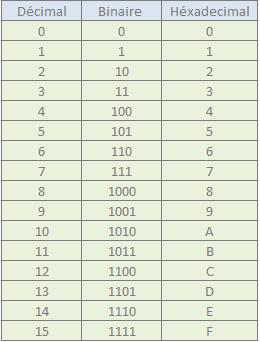
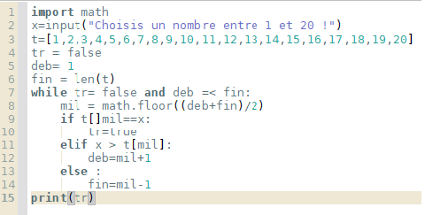
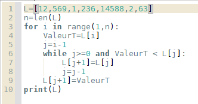

Au cours de l'année, nous avons vu différentes notions en N.S.I. En voici quelques-unes:
Le binaire est un langage uniquement composé de 1 et de 0, d'où son nom. Nous avons appris à convertir des nombre de base 10 (nombres que l'on utilise au quotidien) en base 2 (nombres binaires). Nous avons également réalisé divers programmes de conversion. Enfin, nous avons étudié les nombres héxadécimaux, c'est-à-dire les nombres s'étendant sur une base de 16, utilisant donc des nombres. Voici un petit tableau pour comprendre plus facilement.
Les algorithmes sont des programmes utiles pour certaines situations. Vous cherchez un nombre dans un liste ? Un algorithme saura le faire à votre place. Vous voulez trier une liste ? Ce sera du gâteau pour votre algorithme. Vous souhaitez pouvoir vous transformer en dragon ? Auncun algorithme ne pourra vous aider, vous vous attendiez à quoi ??
Parmis cette fabuleuse famille que sont donc les algorithmes, nous avons étudié deux types pouvant nous aider à chercher un chiffre dans une liste. Le premier est dit "naïf", et consiste en chercher le nombre en regardant tout les nombres. Vous l'aurez compris, cet algorithme n'est pas très attirant. Cependant, son grand frère, l'algorithme de recherche dichotomique, l'est bien plus. En effet, il coupera la liste en deux à la moitié et s'adaptera. Si le chiffre recherché est plus grand que celui du "milieu", l'algorithme coupera la partie "supérieure" de la liste, et inversement si notre nombre est plus petit. On continue ainsi jusqu'à trouver le nombre, et l'on obtient une complexité logathmique (O(logN)). Alors, ça vous en bouche un coin, hein ? Non ? Bon, alors voici l'algorithme en lui-même !
Là encore, il y a deux types d'algorithmes de tri. Un premier, naïf, qui est moins efficace, et un avancé. L'algorithme avancé fonctionne de manière plutôt complexe. Il compare une valeur X1 à une valeur X2. Si X2 est plus petit, X1 prendra sa place et stockera ensuite X2 dans une autre variable. On remplacera ensuite X1 par la valeur stockée dans la variable. X1 et X2 auront donc inversé leurs places. Si X2 n'est pas plus petit, pas de boucle, et on passe donc à la valeur suivante. On aura donc un décalage des plus petites valeurs vers la gauche. On recommence jusqu'à ce que toute la suite soit triée. Toujours pas convaincu ? Vous-êtes sûr ? Regardez l'algorithme, au moins.
Voilà, je vous ai présenté quelques-uns des codes que nous avons crée durant cette année. Je vous invite maitenant à aller lire la page Rapport si ce n'est pas déjà fait !
{kind=link}